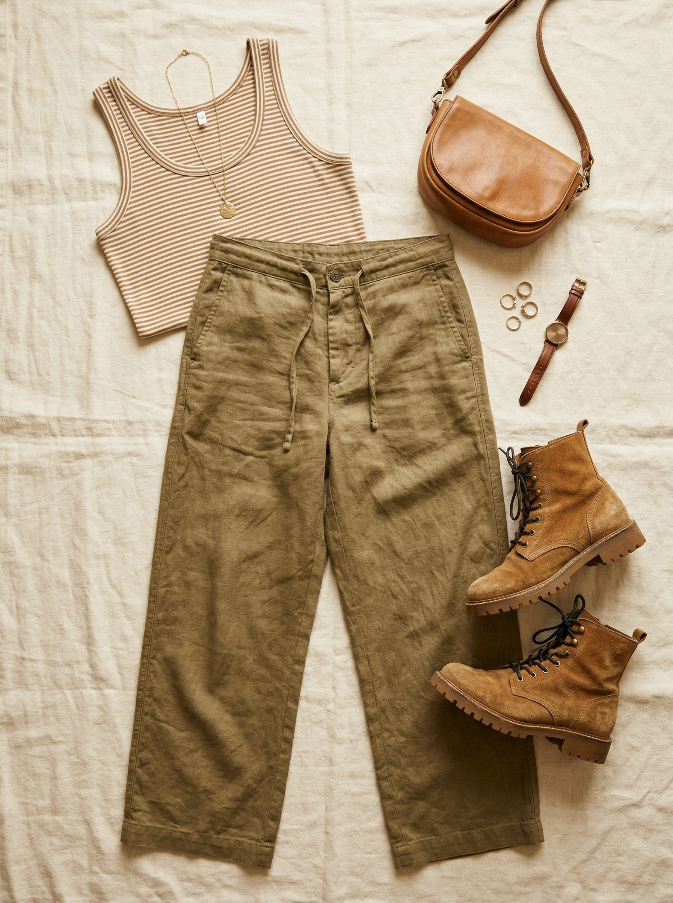
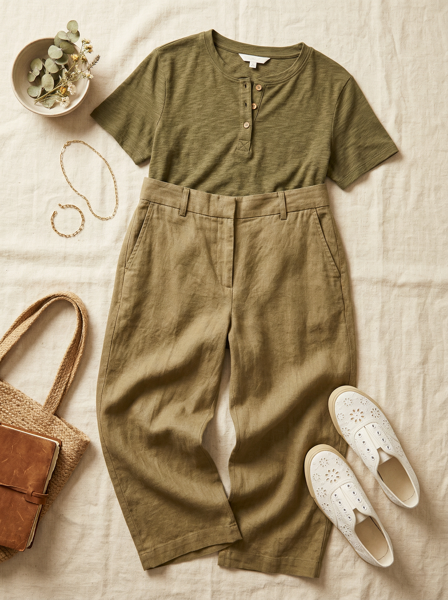
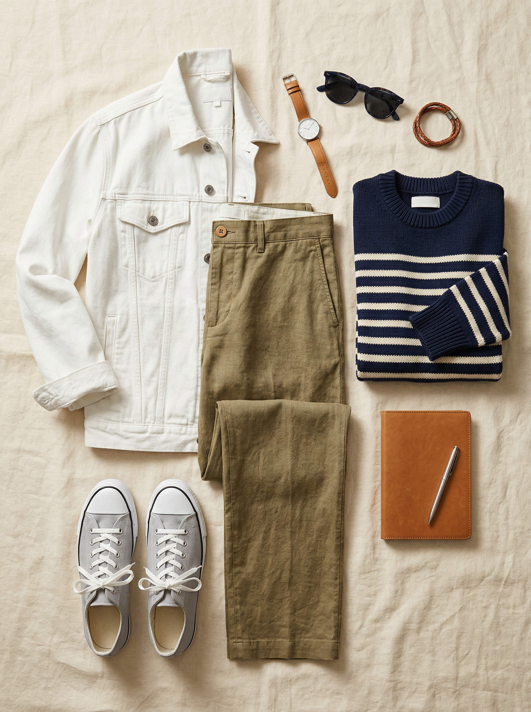

Madewell
The Zoe Relaxed Straight Pant in 100% Linen
$118
100% linen built for DFW summers — it breathes like nothing else. The high-rise relaxed fit is flattering on athletic builds, and the warm olive-khaki Safari Khaki color fills a real gap in a wardrobe that leans heavily navy and black. A genuine spring-through-fall workhorse.
Shop NowWhy This Pick
100% linen is the answer to Texas spring and summer heat — it gets more beautiful as it wrinkles throughout the day. The high-rise with a relaxed, slightly wide leg is flattering on athletic builds. Warm Safari Khaki is a versatile earth tone that pairs with almost every top in your closet, and it fills a color gap that jeans simply can't fill.
3 Ways to Wear It
Styled with pieces already in your closet

Look 1 — Market Day Earth Tones
Tan/white striped tank (#50) + Zoe Linen Pant + Tan suede combat boots (#505). Warm neutrals all the way — the tan stripe in the tank pulls the khaki of the pants, and the tan boots extend the tonal palette to the ground. Saturday farmers market or shopping trip, done right.

Look 2 — Tonal Olive Brunch
Olive green henley (#56) + Zoe Linen Pant + White eyelet slip-on sneakers (#508). Olive on olive-khaki is a sophisticated tonal play. The henley buttons add feminine detail, and the white sneakers keep it fresh and summery. Brunch on a shaded patio — this is the look.

Look 3 — Coastal Sunday
Navy/cream striped sweater (#62) + White denim trucker jacket (#214) + Zoe Linen Pant + Light gray canvas sneakers (#509). The navy stripe sweater gives a crisp Breton-coast vibe, the white denim jacket layers on warmth for an air-conditioned restaurant. A look that feels polished but takes zero effort.